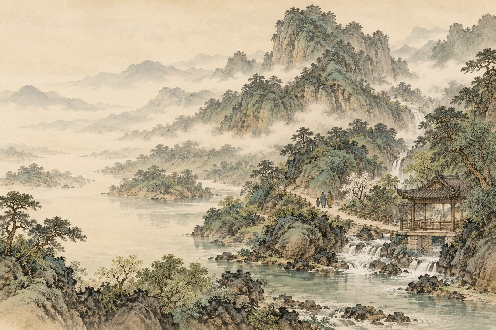
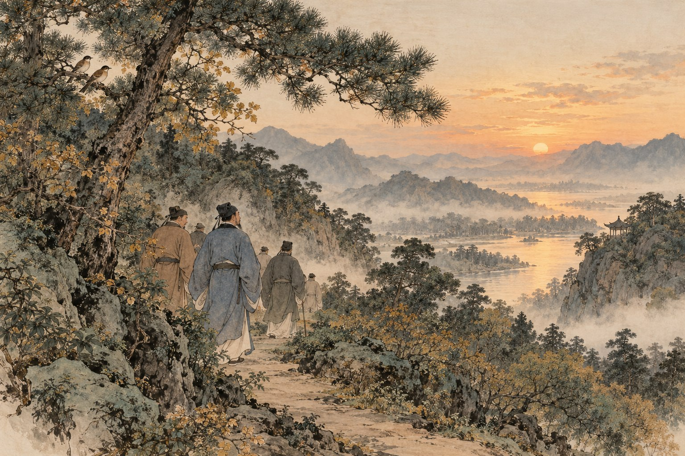

原文点有细线的字词，读音释义即现

慢读先看一幅画，再读一段文。
循着一条游踪，找出每一处“乐”的来由。
画卷目录从任意一幕，走进故事
给一起读书的大人
全文六幕，可先跟着声音与道路入亭，再比较谁在快乐。白话和解释按需打开，先让孩子从动作、景物和原句里说出依据。
白话、赏读和深入讨论按需展开。留给孩子自己的感受，不预设标准读后感。插画是依据文章展开的艺术想象；人物、衣饰、建筑与细节并非历史实景复原。
查看原文版本与资料说明 →停一停 · 你来发现
水墨插画为艺术想象 · 可用键盘 ← → 翻页
把六幕，连成一篇
醉翁亭记
〔北宋〕欧阳修
文止于此，回味未止。
把字词，放回句子里
字词小笺
认一个字，也看它在这一句里做什么。
把意思，放回这一句话
秀与意
佳木秀：树木茂盛。
醉翁之意：醉翁的情趣。
射与丝竹
射：宴席上的投壶游戏。
丝竹：弦管乐器，借指音乐。
乐其乐
前一个乐：以……为乐。
后一个乐：他们的快乐。

合上书，还能带走什么
把快乐读得更宽一点
眼里有山水，
心里也有一起游赏的人。
留下一句，属于自己的体会。
选一处让你觉得快乐的描写，留下自己的理由。
只保存在当前浏览器中。
想聊得更深一点：“我很快乐”和“我为你快乐”，差在哪里？
回看滁人游、众宾欢、太守醉三处，再解释“太守之乐其乐”。能否想到一次自己因别人开心而开心的经历？也可以只谈文中人物。
聊过之后，再读一种理解
自己的游赏之乐来自景物与活动；乐其乐还把别人的感受放进自己的快乐里。前文写百姓来往、宾客欢笑，末段才点出太守的这层心意。二者可以同时存在。
走近写下文字的人：欧阳修
欧阳修是北宋文学家，唐宋八大家之一。本文写他任滁州太守时的山水游赏与宴集。文中反复用“也”作收束，语气舒缓；从写亭转到写乐，最后以姓名点题，让作者与叙述中的太守相遇。
原文与资料 →纸上
再读第一幕 →给一次出游画一张“谁在快乐”图。
回想一次散步、出游或家庭活动，画三个人或动物，旁边写下你观察到的动作。分清“我看见的证据”和“我猜的感受”，再讲讲自己的快乐与他们有什么联系。
卷末 · 资料与制作
每一篇，都有文字的来处。
原文与版本
采用常见课文全文，共六幕、四个自然段。用“酿泉”“山之僧智仙也”“溪”“众宾欢”等通行写法；古本有“让泉”“山之僧曰智仙也”“谿”“懽”等异文。本册统一为便于共读的简体字，保留正文顺序与内容。
校核来源：香港教育局：《醉翁亭记》诵读材料；维基文库：《醉翁亭记》与异文。查阅日期：2026 年 10 月 29 日。古文为公版作品；白话、释义、赏读与共读提示为本册重新组织。
读音与理解
“滁”读 chú，“琅琊”读 láng yá，“暝”读 míng，“伛偻”读 yǔ lǚ，“洌”读 liè，“蔌”读 sù，“觥”读 gōng，“阴翳”读 yīn yì。“意”是意趣，“秀”是茂盛，“颓然”写醉态；“乐其乐”前后两个“乐”的语法角色不同。
六幅水墨画
插画使用内置 image_gen 工具生成。原图与完整提示词保存在本册制作文件中。水墨画帮助读者想象文章，人物、场所、器物是艺术表现，不是历史照片、科学图鉴或精确实验记录。
离线与书架
单文件 HTML 内含本册插画、样式和交互，可以单独阅读。保留原目录结构时可返回书架或切换篇目。来源链接需要网络。
孩子主动填写的话按篇尝试保存在当前浏览器。移动文件、更换浏览器、设备或隐私模式可能影响保存，请导出重要记录；记录不上传，也不会被打入阅读压缩包。书架不代表孩子已经学习或掌握。
回到封面 →